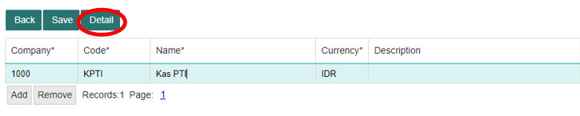
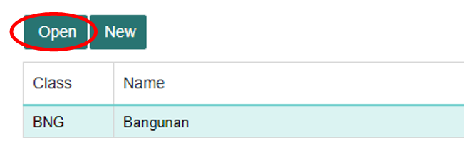

Membuat Pengaturan Akun#
Accounting Setting#
Account Setting (Pengaturan Akun) merupakan sub-menu dari Accounting menu yang dapat mengatur subjek di dalam sistem, seperti akun user, jenis bisnis, partner bisnis, bank master, et. cetera. Berikut adalah beberapa pengaturan yang dapat diatur dalam menu ini:
Cara Menjalankan Menu Accounting Setting
Untuk menjalankan menu Member Master Data. Hal pertama adalah klik module Membership pada halaman utama.

Setelah masuk kedalam module Membership, selanjutnya klik menu Simpanan.

Atau bisa ketik ACS pada kolom pencarian untuk langsung membuka menu Simpanan.
Chart of Account#
Chart of Account adalah kumpulan kode-kode akun transaksi yang akan bersirkulasi dalam sistem dari Perusahaan.
Di bagian ini, memasukkan kode akun perusahaan dengan field seperti di bawah ini:
No. |
Kolom |
Keterangan |
|---|---|---|
1 |
Chart of Account |
Kode Perusahaan yang digunakan untuk mengidentifikasi ataupun memperlancar proses pencatatan transaksi |
2 |
Name |
Nama Perusahaan |
3 |
Description |
Keterangan Perusahaan |
Menambahkan Akun Keuangan Perusahaan.#
Untuk dapat memasukkan record/data baru menggunakkan tombol Add lalu menekan Save jika ingin menyimpan record/data yang telah ditambahkan.
Jika ingin menghapusnya, tekan tombol Remove, lalu untuk menyimpan hasil record yang sudah terhapus tekan tombol Save.
Note
Isi semua kolom yang terdapat tanda (*)
Kolom COA harus unik
Menambahkan Detil Perusahaan#
Untuk dapat menambahkan detail kode keuangan yang dimiliki suatu Perusahaan dengan cara meng-klik salah satu record yang ada di table, kemudian klik Open.
Makan akan ditampilkan kolom detail akun keuangan seperti di bawah ini:
```{note} * Isi semua kolom yang terdapat tanda (*)
* Kolom Account harus unik.
```
Informasi Kolom:
No. |
Kolom |
Keterangan |
|---|---|---|
1 |
Account |
Kode Transaksi yang dimiliki Perusahaan. |
2 |
Name |
Nama kode transaksi |
3 |
Type |
Tipe transaksi: Aset (Assets), Kewajiban (Liabilities), Pendapatan (Revenue), Biaya (Expenses), Ekuitas (Retained Earnings). |
4 |
Deactive |
Masih aktif atau tidaknya kode transaksi. |
5 |
Open Item |
Transaksi atau catatan dalam akuntansi yang belum diselesaikan atau diselesaikan secara parsial. |
6 |
Inter Comp |
Transaksi atau hubungan bisnis antara entitas yang berbeda di dalam satu perusahaan induk atau grup perusahaan. |
7 |
Description |
Keterangan Kode Transaksi |
Tipe transaksi:
Aset (Assets): segala sesuatu yang dimiliki oleh suatu perusahaan yang memiliki nilai ekonomi. Ini bisa termasuk uang tunai, inventaris, gedung, tanah, dan investasi.
Kewajiban (Liabilities): Utang atau kewajiban finansial suatu perusahaan. Ini bisa berupa hutang kepada pemasok, pinjaman, atau kewajiban lainnya.
Pendapatan (Revenue): Uang yang diterima oleh perusahaan sebagai hasil dari penjualan barang atau jasa. Ini merupakan arus masuk ke perusahaan.
Biaya (Expenses): Pengeluaran yang dikeluarkan oleh perusahaan untuk menjalankan bisnisnya. Ini bisa mencakup gaji karyawan, biaya operasional, dan lain-lain.
Ekuitas (Retained Earnings): Bagian yang dimiliki oleh pemilik atau pemegang saham dalam perusahaan. Laba ditahan (retained earnings) adalah bagian dari keuntungan yang tidak dibagikan sebagai dividen tetapi dipertahankan dan diinvestasikan kembali dalam perusahaan.
Untuk dapat menambahkan data baru dengan menekan tombol Add lalu menekan tombol Save untuk menyimpan. Jika ingin menghapus salah satu record/data maka tekan tombol Remove, lalu menyimpan hasil record yang sudah terhapus dengan tombol Save.
Business Area#
Dalam halaman ini mencatat daftar cabang-cabang Perusahaan apa saja yang terdaftar dalam sistem. Untuk dapat menambahkan jenis bidang dengan tombol Add, lalu menyimpannya dengan tombol Save.
Jika ingin menghapus jenis bidang dengan tombol Remove, lalu menyimpan hasil record yang sudah terhapus dengan tombol Save.
Note
Isi semua kolom yang terdapat tanda (*)
Kolom Company harus unik
Berikut adalah Informasi Kolom:
No. |
Kolom |
Keterangan |
|---|---|---|
1 |
Company |
Nama Perusahaan yang akan melakukan |
2 |
Month |
Bulan penutupan periode. |
3 |
Year |
Tahun penutupan periode. |
Business Partner#
Business Partner merupakan daftar vendor/customer atau keduanya yang terdaftar dan sudah bekerja sama dengan pihak Perusahaan.
Anda dapat menambahkan Business Partner dengan tombol Add, lalu menyimpannya dengan tombol Save.
Jika ingin menghapus jenis bidang dengan tombol Remove, lalu menyimpan hasil record yang sudah terhapus dengan tombol Save.
Note
Isi semua kolom yang terdapat tanda (*)
Kolom Bank harus unique.
Berikut adalah informasi kolom:
No. |
Kolom |
Keterangan |
|---|---|---|
1 |
Group |
Kode Jenis Business Partner |
2 |
Name |
Nama Jenis Business Partner |
3 |
Description |
Deskripsi Jenis Business Partner |
Jika ingin melihat business partner apa saja yang sudah terdaftar dalam group, klik salah satu group:
Kemudian untuk melihat business partner yang terdaftar dalam group, klik tombol Open:
Maka akan ditampilkan daftar business partner dari group tersebut.

Untuk menambah business partner dalam Group tersebut Anda dapat menekan Add terlebih dahulu dan mengisi seluruh kolom, kemudian tekan Save.
Note
Isi semua kolom yang terdapat tanda (*)
Kolom Code harus unique.
Jika ingin menghapus salah satu record/data maka klik Remove, kemudian tekan Save lagi.
Berikut adalah informasi kolom yang ada di atas:
No. |
Kolom |
Keterangan |
|---|---|---|
1. |
Code |
Kode Perusahaan |
2. |
Name |
Nama Perusahaan |
3. |
Type |
Tipe Customer atau Vendor atau keduanya |
4. |
Description |
Deskripsi Perusahaan ini adalah |
Untuk mengisi detail dari sebuah perasaan tekan satu Perusahaan kemudian klik Detail:
Maka akan ditampilkan form untuk informasi dari business partner tersebut. Isi dan lengkapi seluruh kolom yang kosong, kemudian klik tombol Save.
Berikut informasi kolom di atas:
No. |
Kolom |
Keterangan |
|---|---|---|
1. |
Code |
Kode Perusahaan |
2. |
Name |
Nama Perusahaan |
3. |
Type |
Tipe Customer atau Vendor atau keduanya |
4. |
Description |
Deskripsi Perusahaan |
5. |
Tax ID |
Nomor transaksi perusahaan |
6. |
Address |
Alamat |
7. |
Country |
Letak perusahaan |
8. |
Telp |
Telepon perusahaan |
9. |
Fax |
Fax perusahaan |
10. |
Email perusahaan |
|
11. |
Contact Person |
Kontak perusahaan |
12. |
Description |
Deskripsi perusahaan |
Business Center#
Dalam bagian ini kita akan melihat data pusat biaya atau divisi-divisi yang menghasilkan atau mengeluarkan uang, berikut tampilannya:
Note
Isi semua kolom yang terdapat tanda (*)
Kolom Company harus unique.
Berikut informasi kolom di atas:
No. |
Kolom |
Keterangan |
|---|---|---|
1. |
Company |
Kode Perusahaan |
2. |
Business Center |
Nama Divisi |
3. |
Name |
Penjelasan Inisial |
4. |
Type |
Tipe dari suatu divisi: |
1. Mendapatkan profit |
||
2. Mengeluarkan uang |
||
5. |
Deactive |
Aktif atau tidaknya suatu record |
6. |
Description |
Deskripsi |
Jika ingin menambahkan divisi maka klik Add, hingga muncul kolom seperti di bawah ini:
Isi dan lengkapi seluruh kolom yang kosong, kemudian klik tombol Save:
Jika Anda ingin menghapus, klik Remove.
Bank Center#
Berikut adalah kode Master Bank atau daftar bank yang dapat melakukan transaksi.
Note
Isi semua kolom yang terdapat tanda (*)
Kolom Bank harus unique.
Anda dapat menambahkan daftar bank dengan menekan tombol Add, dan menekan tombol Save untuk menyimpan record.
Kemudian, jika ingin menghapus salah satu record, tekan record yang ingin di hapus lalu tekan tombol Remove, lalu tekan tombol Save untuk benar-benar menghapus record.
Internal Account#
Di laman ini memperlihatkan tabel berisi akun transaksi yang dimiliki Perusahaan, dapat berbentuk cash ataupun transaksi bank:
Note
Isi semua kolom yang terdapat tanda (*)
Kolom Group harus unique.
Jika ingin menambahkan record/data maka klik Add, isi dan lengkapi kolom setiap kolom yang ada, kemudian klik Save. Jika ingin menghapus data. Klik salah satu record yang akan dihapus, lalu klik Remove.
No. |
Kolom |
Keterangan |
|---|---|---|
1. |
Group |
Kode Internal Account |
2. |
Name |
Nama Internal Account |
3. |
Type |
Tipe Internal Account |
4. |
Description |
Deskripsi Internal Account |
Untuk melihat akun keuangan dari salah satu data Internal Account, klik data yang akan dibuka, kemudian klik Open.

Maka akan ditampilkan daftar keuangan yang dimiliki internal account tersebut.

Note
Isi semua kolom yang terdapat tanda (*) * Kolom Code harus unique.
No. |
Kolom |
Keterangan |
|---|---|---|
1. |
Company |
Kode Perusahaan Internal Account |
2. |
Code |
Code Internal Account |
3. |
Name |
Nama Detil Internal Account |
4. |
Currency |
Mata uang |
5. |
Description |
Deskripsi detil Internal Account |
Untuk dapat menambahkan record/data baru dengan mengklik Add, lalu Save untuk menyimpan data.
Jika ingin menghapus salah satu record, tekan record yang ingin di hapus lalu tekan tombol Remove, lalu tekan tombol Save untuk benar-benar menghapus record.
Jika ingin melihat detail dari tabel ini, klik salah satu data, lalu klik Detail.

Jika Anda ingin mengubah, ubah record yang ingin Anda ubah, selanjutnya klik Save.
Asset Class#
Di dalam halaman ini menampilkan asset-aset yang dimiliki oleh Perusahaan. Berikut tampilannya:
Menambah Aset#
Cara menambah data asset dengan menekan tombol New untuk membuka data asset yang akan dibuka:
Isi dan lengkapi seluruh form yang kosong, kemudian klik Save untuk menyimpan data.
Klik Save untuk menyimpan, lalu klik OK:
Jika Anda ingin menghapus suatu data, klik Remove dan OK:
Mengubah Data#
Untuk dapat mengubah data, Anda dapat menekan record yang ingin di ubah lalu menekan tombol Open:

Kemudian ubahlah data yang ingin diubah lalu klik Save, setelah Anda memberikan perubahan:
Setelah itu akan muncul alert berikut, klik OK:
Berikut ini informasi kolom di atas:
No. |
Kolom |
Keterangan |
|---|---|---|
1. |
Asset Class |
Singkatan atau inisial Asset |
2. |
Asset Class Name |
Nama Asset |
3. |
Depreciation Method |
Cara Depresiasi |
4. |
Uselife (years) |
Masa depresiasi (dalam tahun) |
5. |
Description |
Deskripsi Asset |
Closed Period#
Halaman ini berguna untuk melakukan closing atau penutupan buku ditiap akhir tahun dari setiap Perusahaan.
Note
Isi semua kolom yang terdapat tanda (*)
Anda dapat menambahkan record/data baru dengan menekan tombol Add lalu menekan tombol Save untuk menyimpan record. Jika Anda ingin menghapus salah satu record/data, maka Anda akan menekan tombol Remove, lalu tekan tombol Save agar record benar-benar terhapus. Berikut adalah keterangan kolom tabel:
No. |
Kolom |
Keterangan |
|---|---|---|
1. |
Company |
Nama Perusahaan yang akan melakukan penutupan |
2. |
Month |
Bulan penutupan periode |
3. |
Year |
Tahun penutupan periode |
Transaction Type#
Halaman ini memperlihatkan kode jenis transaksi yang akan digunakan untuk perusahaan.
Untuk dapat menambahkan record/data baru dengan menekan tombol Add lalu menekan tombol Save untuk menyimpan record.
Jika ingin menghapus salah satu record/data, klik tombol Remove, lalu tekan tombol Save lagi. Berikut adalah keterangan kolom tabel:
No. |
Kolom |
Keterangan |
|---|---|---|
1. |
Group |
Jenis transaksi |
2. |
Type |
Inisial tipe transaksi |
3. |
Name |
Nama tipe transaksi atau penjelasan dari inisial |
4. |
Condition |
Kondisi kriteria atau persyaratan atau klasifikasi tertentu |
5. |
Seq. |
Nomor urut atau cara transaksi diidentifikasi dan diurutkan. Ini bisa menjadi nomor faktur, nomor referensi |
Account Assignment#
Halaman ini kita akan melihat berbagai macam jenis transaksi dan juga proses akuntansi. Dalam halaman ini Anda mampu menetapkan account debit atau credit yang terjadi dalam suatu menu transaksi:
Saat mengisi record, Anda akan melihat kolom yang memberikan pilihan untuk tipe transaksi, isi sesuai kebutuhan proses transaksi akuntansi, kemudian klik OK.
Setelah menekan OK, akan kembali ke laman ini dan sebagian record sudah terisi oleh detail transaksi:
Isi akun debit dan credit yang dari transaksi yang akan dilakukan:
Kemudian klik Save, lalu OK, untuk menyimpan data sampai alert terlihat seperti di bawah ini: